Webbteknik II
1DV449
Webb-API:er
och REST

Linnéuniversitetet, HT2012

Detta verk är licensierat under en
Creative Commons Erkännande-IckeKommersiell-DelaLika 3.0 Unported Licens.
Webb-API:er
REST
Historiken - Web Service, XML-RPC
REST - Vad? Hur?
Tankar vid skapande av API?
Vi kommer i denna förläsning titta på arkitekturer för hur vi kan dela vår data med hjälp av API:er. Vi kommer dels titta lite historiskt och introducera begreppen WS-*, RPC men fokus kommer ligga på rena webb-API:er enligt REST.
VARFÖR?

- Stödja våra idéer
- Enkel tillgång till back-end
- Dela sin data med andra
- Konkurrensfördelar
- Myndighetskrav
Mobila appar, tv., börja med API. Köpa en tjänst. Ett har API ett har inte?
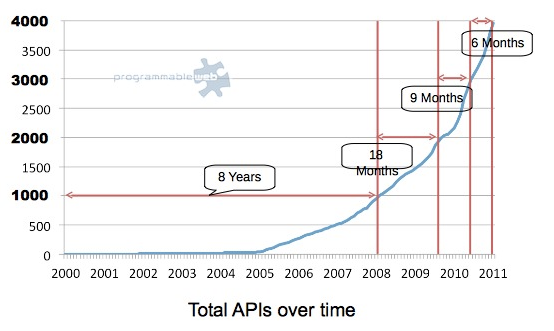
Photo taken from www.programmableweb.com (nov 2012)
Historisk återblick
Tekniker för distribuerade applikationer
CORBA or DCOM or Java RMI....FTW!!!
XML...Yeah!!!
Web Services is the future
RESTful Web-API...All aboard!
Det har alltid varit viktigt att applikationer sk akunna utbyta information mellan varandra i ett nätverkt, lokalt så som externt. Naturligtvis har det förekommit mängder av forskning och tekniker som försökt lösa detta. De stora lägren hade sina egna tekniker. I och med Internets genomslagskraft utvecklades XML som databärare och Web Service. Idagsläget pratar man mycket RESTfullnes och enklare webb-API:er. Det är dock viktigt att komma ihåg att de andra teknikerna används fortfarande i många enterpriselösningar.
XML-RPC
Remote Procedure Call
Exekvera kod på en annan dator i nätverket (endpoint)
Använda XML över HTTP till att definiera datatyper, metodnamn, parametrar och returvärden, 1998
JSON-RPC, 2005
Denna teknik används fortfarande idag om än ganska sparsmakat. Wordpress, bloggar ect.
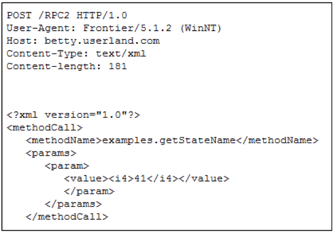 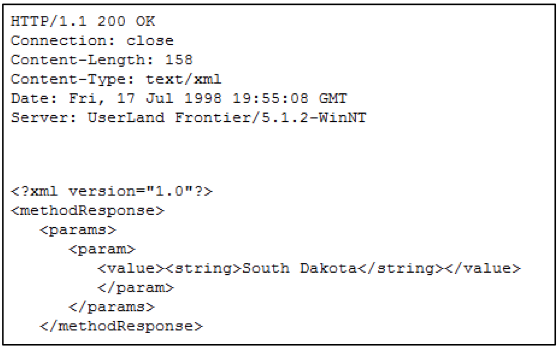
http://en.wikipedia.org/wiki/XML-RPC
http://en.wikipedia.org/wiki/JSON-RPC
JSON-RPC, samma teknik men i jsonformat
Web Service, WS-*
Standardisering av W3C
Olika XML-applikationer
Möjlighet till automatgenererad kod
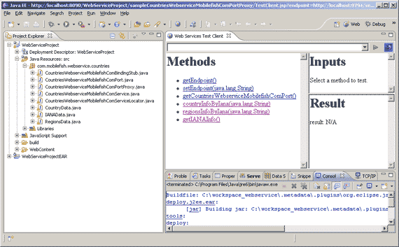
Enterprise, "Big Web services"
Transaction, Security, Hantering av state....osv
Web Service dumt namn mycket automatiskt, mycket overhead
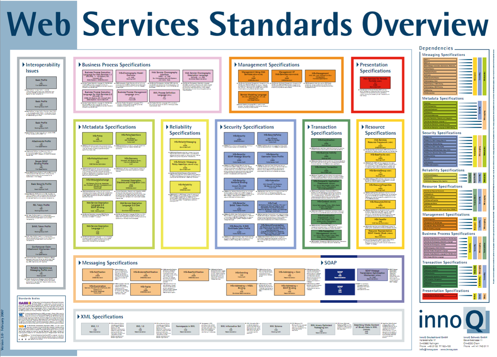
Krångligt experthjälp Mycket som enterpriseapplikationer behöver detta stöd
Web Service stack


WSDL
Web Service Description Language
"Kontrakt" som beskriver hur anrop, parametrar, retursvar, datatyper m.m. ska se ut.
Läsbara för applikationer som kan skapa "wrappers" på ett enkel sätt.
http://www.webservicex.net/WeatherForecast.asmx?WSDL
Förstora bilden?
SOAP
Format för att skicka meddelande mellan klient och server
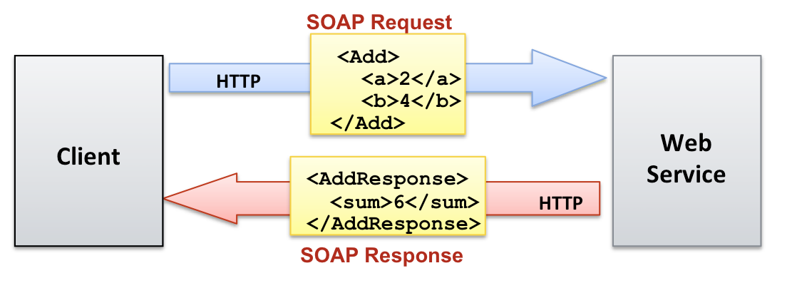
SOAP Request
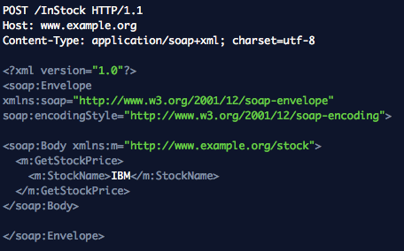
SOAP Response
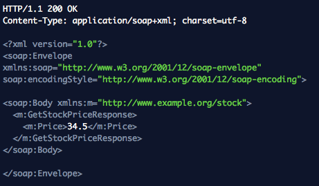
WS-* idag
Mycket tid och resurser har lagts på Web Service
Många befintliga system och mycket kompetens
Vissa företag kräver fortfarande Web Services
Enterprise, säkerhetskritiska tjänster
VS.
http://www.example.org/stockprice/IBM.json
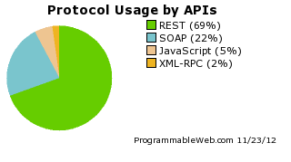
REST
Representational State Transfer
Arkitektur för distribuerade hypermediasystem
Roy Fielding, 2000
”Architectural styles and the design of networked-based architecture”
http://www.ics.uci.edu/~fielding/pubs/dissertation/rest_arch_style.htm
http://roy.gbiv.com
Varför fungerar webben så bra och hur kan vi
använda dess arkitektur i distribuerade applikationer?
1. Every “thing” is a resource
1. Every “thing” is a resource
A resource can be any meningsful concept that may be adressed
En produkt, ett resultat, en telefonbok, en person, en lista med personer....
http://www.example.org/users/3287
2. Every resource must
have a unique ID
En lista över alla användare i vår tjänst
http://www.mysite.com/users
En specifik användare i vår tjänst
http://www.mysite.com/users/142
En specifik användares ordrar
http://www.mysite.com/users/142/orders
En resurs identifieras med en URI/URL
Försök hålla enkla, självbeskrivande.
3. Use the HTTP standard
Use the HTTP standard - Request
En resurs, flera HTTP metoder/verbs/actions
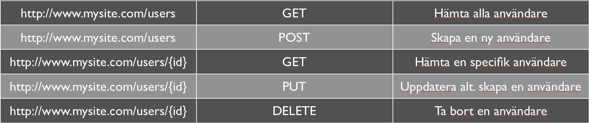
PUT - Skapar om resursen inte finns, annars uppdaterar, Anropa samma URL flera gånger utan ändra state. /orders/123 POST - skapar resursen om den tilldelas primär id av servern (servern får egentligen göra vad den vill med data, utföra kommandon osv); location: new reourse Ändrar status varje gång? /orders
Use the HTTP standard - Response
Använd de statuskoder som HTTP definierat!
200 OK
404 Not Found
500 Internal Server Error
POST /users
{"name": "John"}
201 Created
Location: /users/12
{"ref": "http://www.example.com/users/12"}
4. Multiple representations
En resurs kan ha flera represenationer
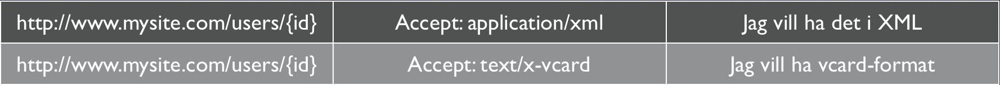
http://www.mysite.com/users/123/xml
http://www.mysite.com/users/123/json
http://www.mysite.com/users/123.xml
http://www.mysite.com/users/123.json
5. REST is stateless
Servern ska ej hålla reda på klientapplikationens "tillstånd"
Representational State Transfer
Varje anrop måste upplyssa servern om klientens tillstånd
Cookies?, Sessioner?, Inloggning?
6. Hypermedia as the engine of application state (HATEOAS)
Your clients shouldn’t be building their own URIs, they should be given the URIs from the API
200 OK
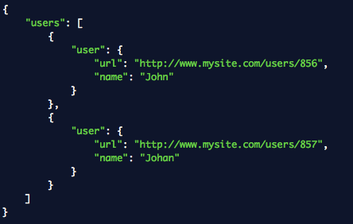
POST /orders
201 Created
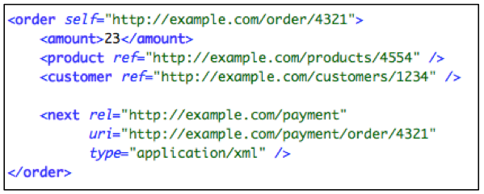
1. Every “thing” is a resource
2. Every resource must have a unique ID
3. Use the HTTP standard
4. Multiple representations
5. REST is stateless
6. Hypermedia as the engine of application state (HATEOAS)
How to GET a Cup of Coffee
http://www.infoq.com/articles/webber-rest-workflowJodå, vi är RESTful!...eller?
1. Kör alla anrop via GET
2. Kör alla anrop via POST
3. Bortser från möjligheterna med HTTP
4. Ignorerar caching
5. Låter servern hålla klienters sessionsdata
6. Tänker inte på HATEOAS
7. Struntar i att vara självbeskrivande
Ska man vara en RESTafarian?
Accept: application/xml OR users.xml
Accept: application/json OR users.json
PUT, DELETE
OR
<input type="hidden" name="method" value="delete" />
/users?orderby=name&gender=female&city=kalmar
/users/female/city/kalmar/orderby/name
/users
{ 'gender':'female', 'city':'kalmar', 'orderby':'name' }
Paging? Delmängd av en resurs?
/users/page2
Använda HTTP-headern: Range?
?offset=10&size=20
Hur börjar man? Att tänka på!
Hur ska anropen se ut?
Hur ser svaren ut?
Vilka parametrar?
Vilka headers använder vi?
Vilken data ska kommas åt?
Behöver vi inloggning?
Börja med dokumentationen?!
Att tänka på!
Gör det enkelt och inbjudande för utvecklarna att använda ditt API
TTFR - Time to first request
Lyssna på användarna av ditt API
Använd API-nyckel
Versionshantera ditt API
api.myservice.com/v1
api.myservice.com/v2
Dokumentation av ett API!
Var tydlig
Beskriv funktionen
Visa exempel på Requests och Responses
Förklara ev. autentisering och felhantering
Ge en exempelapplikation/exempelkod
Beskriv problemdomänen, terminologi o.s.v.
Tips vid utveckling
URL rewriting?
www.mysite.com/users/123
Enligt REST är detta en resurs, ingen katalog!
.htaccess (Apache)
web.config (IIS)
Se demofilmer på kurshemsidan
Ny applikation? Skriv API:et först!
REST over HTTP != REST
En “high-level” arkitektur
Be RESTful (med sans)